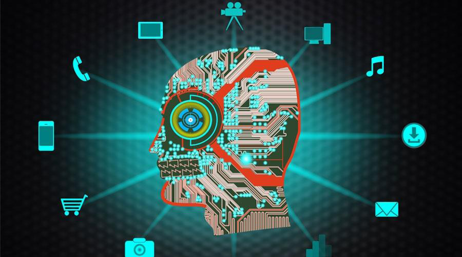

Artificial Intelligence
Links:
Artificial Intelligence
The emergence of the term artificial intelligence comes back to the fiftieth decade of the twentieth century, specifically in 1950, when the scientist Alan turing introduced what is known as the "Turing test", which explains how slow the computer is. The first to develop the AI program is the world chirstopher strachey. The concept of artificial intelligence was formally announced in 1956, but it has not achieved any progress in twenty years due to any limited capabilities of computers at that time.
Artificial intelligence is one of the branches of computer science and one of the main pillars on which the technology industry is based. Today, the term artificial intelligence, which is abbreviated (Al), indicates that the capabilities of digital machines and computers to perform certain tasks resemble the tasks performed by smart beings.
